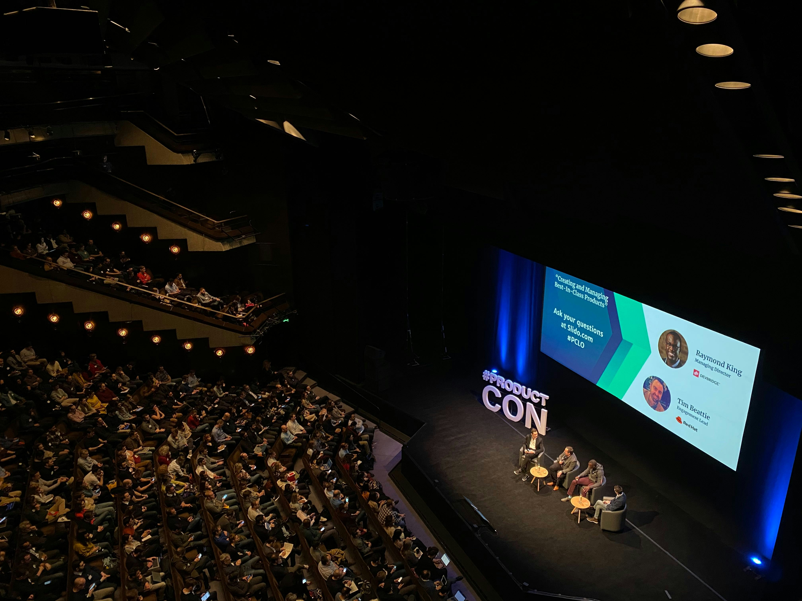

History
TechCon was first launched in 2010 as a small gathering for developers and entrepreneurs to explore emerging technology trends.
Starting in San Francisco with fewer than 200 participants, it quickly evolved into one of the world’s premier innovation conferences.
Over more than a decade, TechCon has showcased breakthroughs in artificial intelligence, cloud computing, and the Internet of Things, drawing thousands of attendees from over 50 countries.

Mission
TechCon 2024 aims to foster innovation and collaboration among tech professionals, startups, and ambitious students.
Our mission is to empower the global tech community by:
– Sharing cutting-edge research and practical solutions.
– Creating networking opportunities between industry leaders and developers.
– Supporting ideas that make technology more sustainable and secure.
We are committed to an inclusive environment where everyone can help shape the digital future.

Past Speakers
Over the years, TechCon has welcomed world-class technology leaders who inspired audiences to push boundaries, including:
– Elon Musk – CEO of Tesla and SpaceX, who spoke about the future of electric vehicles and space exploration.
 Susan Wojcicki – Former CEO of YouTube, sharing insights on the evolution of digital content.
Susan Wojcicki – Former CEO of YouTube, sharing insights on the evolution of digital content.
 – Linus Torvalds – Creator of the Linux operating system, presenting on the power of open-source innovation.
These speakers have motivated thousands of attendees to adopt new technologies and launch groundbreaking projects.
– Linus Torvalds – Creator of the Linux operating system, presenting on the power of open-source innovation.
These speakers have motivated thousands of attendees to adopt new technologies and launch groundbreaking projects.